RetinaFace人脸检测模型实现 更多...
#include <stdio.h>#include <stdlib.h>#include <string.h>#include <math.h>#include "retinaface.h"#include "common.h"#include "file_utils.h"#include "image_utils.h"#include "rknn_box_priors.h"
retinaface.cc 的引用(Include)关系图:
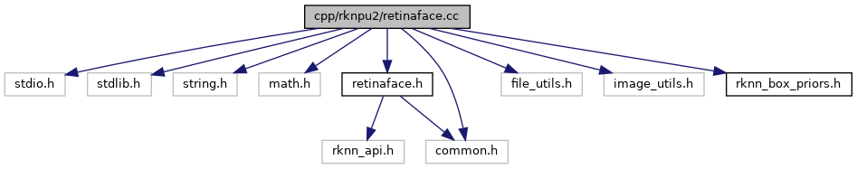
宏定义 | |
| #define | NMS_THRESHOLD 0.4 |
| #define | CONF_THRESHOLD 0.5 |
| #define | VIS_THRESHOLD 0.4 |
函数 | |
| static int | clamp (int x, int min, int max) |
| 将数值限制在指定范围内 更多... | |
| static void | dump_tensor_attr (rknn_tensor_attr *attr) |
| 打印张量属性信息 更多... | |
| static float | CalculateOverlap (float xmin0, float ymin0, float xmax0, float ymax0, float xmin1, float ymin1, float xmax1, float ymax1) |
| 计算两个边界框的重叠度（IoU） 更多... | |
| static int | nms (int validCount, float *outputLocations, int order[], float threshold, int width, int height) |
| 执行非极大值抑制（NMS） 更多... | |
| static int | quick_sort_indice_inverse (float *input, int left, int right, int *indices) |
| 快速排序（降序） 更多... | |
| static int | filterValidResult (float *scores, float *loc, float *landms, const float boxPriors[][4], int model_in_h, int model_in_w, int filter_indice[], float *props, float threshold, const int num_results) |
| 过滤有效检测结果 更多... | |
| static int | post_process_retinaface (rknn_app_context_t *app_ctx, image_buffer_t *src_img, rknn_output outputs[], retinaface_result *result, letterbox_t *letter_box) |
| RetinaFace后处理 更多... | |
| int | init_retinaface_model (const char *model_path, rknn_app_context_t *app_ctx) |
| 初始化RetinaFace模型 更多... | |
| int | release_retinaface_model (rknn_app_context_t *app_ctx) |
| 释放RetinaFace模型资源 更多... | |
| int | inference_retinaface_model (rknn_app_context_t *app_ctx, image_buffer_t *src_img, retinaface_result *out_result) |
| 执行RetinaFace模型推理 更多... | |
详细描述
RetinaFace人脸检测模型实现
宏定义说明
◆ CONF_THRESHOLD
| #define CONF_THRESHOLD 0.5 |
置信度阈值
◆ NMS_THRESHOLD
| #define NMS_THRESHOLD 0.4 |
非极大值抑制阈值
◆ VIS_THRESHOLD
| #define VIS_THRESHOLD 0.4 |
可视化阈值
函数说明
◆ CalculateOverlap()
|
static |
计算两个边界框的重叠度（IoU）
- 参数
-
[in] xmin0 第一个框的左边界 [in] ymin0 第一个框的上边界 [in] xmax0 第一个框的右边界 [in] ymax0 第一个框的下边界 [in] xmin1 第二个框的左边界 [in] ymin1 第二个框的上边界 [in] xmax1 第二个框的右边界 [in] ymax1 第二个框的下边界
- 返回
- float 重叠度值
这是这个函数的调用关系图:
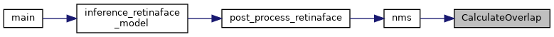
◆ clamp()
|
static |
将数值限制在指定范围内
- 参数
-
[in] x 输入值 [in] min 最小值 [in] max 最大值
- 返回
- int 限制后的值
这是这个函数的调用关系图:
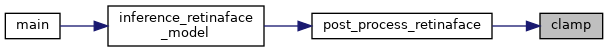
◆ dump_tensor_attr()
|
static |
打印张量属性信息
- 参数
-
[in] attr 张量属性指针
这是这个函数的调用关系图:
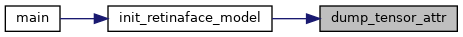
◆ filterValidResult()
|
static |
过滤有效检测结果
- 参数
-
[in] scores 置信度数组 [in,out] loc 位置数组 [in,out] landms 关键点数组 [in] boxPriors 先验框数组 [in] model_in_h 模型输入高度 [in] model_in_w 模型输入宽度 [out] filter_indice 过滤后的索引数组 [out] props 过滤后的置信度数组 [in] threshold 置信度阈值 [in] num_results 结果数量
- 返回
- int 有效检测框数量
这是这个函数的调用关系图:
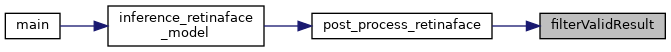
◆ inference_retinaface_model()
| int inference_retinaface_model | ( | rknn_app_context_t * | app_ctx, |
| image_buffer_t * | src_img, | ||
| retinaface_result * | out_result | ||
| ) |
执行RetinaFace模型推理
- 参数
-
[in] app_ctx RKNN应用上下文 [in] img 输入图像 [out] out_result 检测结果
- 返回
- int 0表示成功，非0表示失败
函数调用图:

这是这个函数的调用关系图:

◆ init_retinaface_model()
| int init_retinaface_model | ( | const char * | model_path, |
| rknn_app_context_t * | app_ctx | ||
| ) |
初始化RetinaFace模型
- 参数
-
[in] model_path 模型文件路径 [out] app_ctx RKNN应用上下文
- 返回
- int 0表示成功，非0表示失败
函数调用图:
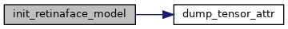
这是这个函数的调用关系图:
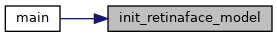
◆ nms()
|
static |
执行非极大值抑制（NMS）
- 参数
-
[in] validCount 有效检测框数量 [in] outputLocations 检测框位置数组 [in,out] order 排序索引数组 [in] threshold NMS阈值 [in] width 图像宽度 [in] height 图像高度
- 返回
- int 0表示成功
函数调用图:
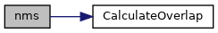
这是这个函数的调用关系图:
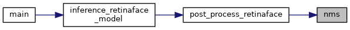
◆ post_process_retinaface()
|
static |
RetinaFace后处理
- 参数
-
[in] app_ctx RKNN应用上下文 [in] src_img 源图像 [in] outputs 模型输出 [out] result 检测结果 [in] letter_box 图像缩放信息
- 返回
- int 0表示成功，非0表示失败
函数调用图:
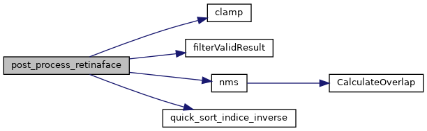
这是这个函数的调用关系图:
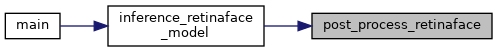
◆ quick_sort_indice_inverse()
|
static |
快速排序（降序）
- 参数
-
[in,out] input 输入数组 [in] left 左边界 [in] right 右边界 [in,out] indices 索引数组
- 返回
- int 基准元素位置
这是这个函数的调用关系图:
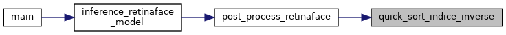
◆ release_retinaface_model()
| int release_retinaface_model | ( | rknn_app_context_t * | app_ctx | ) |
释放RetinaFace模型资源
- 参数
-
[in] app_ctx RKNN应用上下文
- 返回
- int 0表示成功，非0表示失败
这是这个函数的调用关系图:
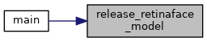